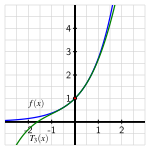
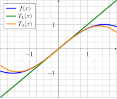
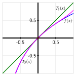
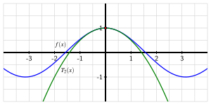
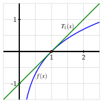
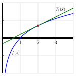

Can we find higher degree polynomial approximations for functions other than \(f(x) = e^x\text{?}\)
How are the coefficients of the polynomial approximation to a function \(f(x)\) near \(a = 0\) determined by the values of the various derivatives of \(f\text{,}\) evaluated at \(a = 0\text{?}\)
How do the polynomial approximations to a given function \(f\) change when we center the approximation at a point other than \(a = 0\text{?}\)
In Activity 8.1.3, we investigated a degree \(3\) polynomial approximation \(T_3(x)\) to \(f(x) = e^x\) near \(a = 0\text{.}\) To do so, we chose the conditions \(T_3(0) = f(0)\text{,}\)\(T_3'(0) = f'(0)\text{,}\)\(T_3''(0) = f''(0)\text{,}\) and \(T_3'''(0) = f'''(0)\text{.}\) Starting with 1 \(T_3(x) = c_0 + c_1 x + c_2 x^2 + c_3 x^3\) and \(f(x) = e^x\) and finding the needed derivatives and evaluating them at \(a = 0\) led us to the results in Table 8.2.1.
Table8.2.1.Formulas and values for \(f(x) = e^x\) and \(T_3(x) = c_0 + c_1 x + c_2 x^2 + c_3 x^3\) and their derivatives.
\(f(x)=\)
\(e^x\)
\(T_3(x)=\)
\(c_0 + c_1 x + c_2 x^2 + c_3 x^3\)
\(f'(x)=\)
\(e^x\)
\(T_3'(x)=\)
\(c_1 + 2 c_2 x + 3 c_3 x^2\)
\(f''(x)=\)
\(e^x\)
\(T_3''(x)=\)
\(2 c_2 + 6 c_3 x\)
\(f'''(x)=\)
\(e^x\)
\(T_3''(x)=\)
\(6 c_3\)
\(f(0)=\)
\(1\)
\(T_3(0)=\)
\(c_0\)
\(f'(0)=\)
\(1\)
\(T_3'(0)=\)
\(c_1\)
\(f''(0)=\)
\(1\)
\(T_3''(0)=\)
\(2c_2\)
\(f'''(0)=\)
\(1\)
\(T_3''(0)=\)
\(6c_3\)
Equating the function and derivative values of \(f\) and \(T\) at \(a = 0\text{,}\) we found that
Moreover, plotting \(f\) and \(T_3\) near \(a = 0\text{,}\) we see in the Figure 8.2.2 that the interval of accuracy for a tolerance of \(0.1\) is about \(-1.2 \le x \le 1.2\text{.}\)

Figure8.2.2.The function \(f(x)=e^x\) and its degree \(3\) Taylor approximation \(T_3(x) = 1 + x + \frac{1}{2}x^2 + \frac{1}{6}x^3\) near the point \((0,f(0))\text{.}\)
More precisely, we might compute that \(|f(-1.16) - T_3(-1.16)| \approx 0.0608\) and \(|f(1.16) - T_3(1.16)| \approx 0.0970\text{,}\) which helps us see the degree \(3\) approximation is quite accurate on an interval wider than \(|x| \lt 1\text{.}\)
In this section, we will learn how we can more systematically find degree \(n\) approximations for functions such as \(f(x) = e^x\) that have at least \(n\) derivatives, as well as how to center the approximation at a value other than \(a = 0\text{.}\)
Preview Activity8.2.1.
Let \(f(x) = \sin(x)\) and let \(T_3(x) = c_0 + c_1 x + c_2 x^2 + c_3x^3\text{.}\) Our goal is to find the values of \(c_0, \ldots, c_3\) that make the sine function and its derivative values agree with those of the cubic polynomial \(T_3\) at \(a = 0\) and to study the resulting degree \(3\) approximation of the sine function.
(a)
As in previous work, the derivatives of \(T_3(x)\) and their respective values at \(a = 0\) are those shown in the following table. Compute the various derivatives of \(f(x) = \sin(x)\) and evaluate them at \(a = 0\) accordingly, recording your results in the left side of the table.
\(f(x) = {}\)
\(\sin(x)\)
\(T_3(x) = {}\)
\(c_0 + c_1 x + c_2 x^2 + c_3 x^3\)
\(f'(x) = {}\)
\(T_3'(x) = {}\)
\(c_1 + 2 c_2 x + 3 c_3 x^2\)
\(f''(x) = {}\)
\(T_3''(x) = {}\)
\(2 c_2 + 6 c_3 x\)
\(f'''(x) = {}\)
\(T_3'''(x) = {}\)
\(6 c_3\)
\(f(0) = {}\)
\(T_3(0) = {}\)
\(c_0\)
\(f'(0) = {}\)
\(T_3'(0) = {}\)
\(c_1\)
\(f''(0) = {}\)
\(T_3''(0) = {}\)
\(2c_2\)
\(f'''(0) = {}\)
\(T_3'''(0) = {}\)
\(6c_3\)
(b)
Now, set \(T_3(0) = f(0)\text{,}\)\(T_3'(0) = f'(0)\text{,}\)\(T_3''(0) = f''(0)\text{,}\) and \(T_3'''(0) = f'''(0)\text{.}\) This implies \(c_0={}\), \(c_1={}\), \(c_2={}\), and \(c_3={}\).
Putting it all together, what is the resulting formula for \(T_3(x)\text{?}\)
(c)
Recall that the tangent line approximation \(T_1\) to \(f(x) = \sin(x)\) at \(a = 0\) is \(T_1(x) = x\text{,}\) as plotted below. On the same axes, we’ve plotted the cubic approximation \(T_3\) you found in part (b).

What do you observe about the approximation \(T_3\) generates compared to the tangent line approximation \(T_1\text{?}\)
The cubic approximation is closer to the function for more values of \(x\text{.}\)
The tangent line approximation is closer to the function for more values of \(x\text{.}\)
Both approximate the function equally well.
(d)
Compute \(f(1) - T_1(1)\) and \(f(1) - T_3(1)\text{.}\)
What do you notice about the size and sign of those differences?
(e)
For about what values of \(x\) does it appear that \(\lvert f(x) - T_1(x) \rvert \lt 0.1\text{?}\)
For about what values of \(x\) does it appear that \(\lvert f(x) - T_3(x) \rvert \lt 0.1\text{?}\)
Subsection8.2.1Taylor polynomials
In our work so far in Chapter 8, we have found several different approximations of two important functions: \(e^x\) and \(\sin(x)\text{.}\) In Section 8.1, we saw that near \(a = 0\)
\(e^x \approx 1 + x\) (the degree \(1\) approximation);
\(e^x \approx 1 + x + \frac{1}{2}x^2\) (the degree \(2\) approximation);
\(e^x \approx 1 + x + \frac{1}{2}x^2 + \frac{1}{6}x^3\) (the degree \(3\) approximation); and
\(e^x \approx 1 + x + \frac{1}{2}x^2 + \frac{1}{6}x^3 + \frac{1}{24}x^4\) (the degree \(4\) approximation).
Moreover, we found that as the degree of the approximation increased, the polynomial approximation got more accurate by being closer to \(e^x\) at each fixed value of \(x\) as well as on a wider interval.
\(\sin(x) \approx x\) (the degree \(1\) approximation); and
\(\sin(x) \approx x - \frac{1}{6}x^3\) (the degree \(3\) approximation).
We can also notice that the linear approximation is embedded within the quadratic approximation, and the quadratic approximation within the cubic one, and so on. These observations naturally lead us to consider approximations of arbitrary degree \(n\) in order to generate more accurate approximations for any function with a sufficient number of derivatives. We thus define the Taylor polynomial of degree \(n\) centered at \(a = 0\).
Definition8.2.3.
Let \(n\) be a natural number and let \(f\) be a function with at least \(n\) derivatives at \(a = 0\text{.}\) The degree \(n\) Taylor polynomial of \(f\) centered at \(a = 0\) is the function
By definition, \(T_n\) is the polynomial whose function and first \(n\) derivative values at \(a = 0\) match the function value and all \(n\) derivative values of \(f\) at \(a = 0\text{.}\)
enable us to determine the coefficients \(c_0, c_1, \ldots, c_n\) in terms of the values of the various derivatives of \(f\text{.}\) First, we take \(n\) derivatives of \(T_n(x)\text{,}\) and assemble those in Table 8.2.4. As we do so, we choose not to combine products of numbers that arise in order to see certain patterns in the coefficients.
Table8.2.4.The first \(n\) derivatives of a degree \(n\) Taylor polynomial.
Next, we (1) evaluate each of the derivatives at \(a = 0\text{,}\) and then (2) set the result equal to the corresponding derivative value of \(f\) evaluated at \(a = 0\text{,}\) which ultimately enables us to determine the coefficients \(c_0, c_1, \ldots, c_n\text{.}\) These two steps are summarized in Table 8.2.5.
Table8.2.5.Using the defining properties of a degree \(n\) Taylor polynomial to find equations involving the coefficients \(c_k\text{.}\)
We see a natural pattern that results from taking the \(k\)th derivative of a degree \(k\) term. For example, the repeated derivatives of \(x^4\) are \(4x^3\text{,}\)\(4 \cdot 3 x^2\text{,}\)\(4 \cdot 3 \cdot 2 x\text{,}\) and finally \(4 \cdot 3 \cdot 2 \cdot 1\text{.}\) By the time we get to the fourth derivative of \(x^4\text{,}\) only a constant remains, and that constant is the factorial 2
From the rightmost column of Table 8.2.5, we now see how the values of \(c_0, c_1, \ldots, c_n\) are determined by the values of the various derivatives evaluated at \(a = 0\text{,}\) each scaled by a corresponding factorial. In particular, solving each equation in the rightmost column of Table 8.2.5 for \(c_k\text{,}\) we see that
This enables us to find the Taylor polynomial of degree \(n\) for any function \(f\) by finding the values of \(f(0), f'(0), \ldots, f^{(n)}(0)\) and using these numbers to determine \(c_0, c_1, \ldots, c_n\text{.}\) We summarize our recent work as follows.
Finding the degree \(n\) Taylor polynomial of \(f\) centered at \(a = 0\).
If \(f\) is a function with at least \(n\) derivatives at \(a = 0\text{,}\) then the degree \(n\) Taylor polynomial of \(f\) centered at \(a = 0\text{,}\)\(T_n(x)\text{,}\) is
To find the degree \(5\) Taylor polynomial, we need to compute \(f(0)\text{,}\)\(f'(0)\text{,}\)\(f''(0)\text{,}\)\(\ldots\text{,}\)\(f^{(5)}(0)\text{,}\) so we first find the first through fifth derivatives of \(f\) in the left column of Table 8.2.7, and then evaluate those derivatives at \(a = 0\) in the right column.
Table8.2.7.Finding the derivatives of \(f(x) = \ln(1+x)\) at \(a = 0\text{.}\)
\(f(x) = \ln(1+x)\)
\(f(0) = \ln(1) = 0\)
\(f'(x) = \frac{1}{1+x} = (1+x)^{-1}\)
\(f'(0) = (1){-1} = 1\)
\(f''(x) = (-1)(1+x)^{-2}\)
\(f''(0) = (-1) (1)^{-2} = -1\)
\(f'''(x) = (-2)(-1)(1+x)^{-3}\)
\(f'''(0) = (-2)(-1) (1)^{-3} = (-2)(-1)\)
\(f^{(4)}(x) = (-3)(-2)(-1)(1+x)^{-4}\)
\(f^{(4)}(0) = (-3)(-2)(-1)\)
\(f^{(5)}(x) = (-4)(-3)(-2)(-1)(1+x)^{-5}\)
\(f^{(5)}(0) = (-4)(-3)(-2)(-1)\)
When finding the coefficients of a Taylor polynomial, it is often helpful to not combine products such as \((-3)(-2)(-1)\) and \((-4)(-3)(-2)(-1)\) into a single number, in order to better observe patterns; indeed, by not combining the constants that arise in higher derivatives of \(f(x) = \ln(1+x)\text{,}\) we see patterns of alternating signs and factorials that arise. From the right column of Table 8.2.7 and the fact that \(c_k = \frac{f^{(k)}(0)}{k!}\text{,}\) we see that
and plotting \(T_5(x)\) along with \(f(x)\) and \(T_1(x)\) in Figure 8.2.8, we see how much better the degree \(5\) approximation is than the tangent line approximation.

Figure8.2.8.The function \(f(x)=\ln(1+x)\) and its degree \(5\) Taylor approximation \(T_5(x) = x - \frac{1}{2}x^2 + \frac{1}{3}x^3 - \frac{1}{4}x^4 + \frac{1}{5}x^5\) near the point \((0,f(0))\text{,}\) along with \(T_1(x) = x\text{.}\)
From our work in Example 8.2.6, we can also see a pattern that arises and thus we expect the general degree \(n\) Taylor polynomial centered at \(a = 0\) for \(f(x) = \ln(1+x)\) to be
For many familiar functions, a pattern emerges in their derivatives that enables us to find the general form of the degree \(n\) Taylor polynomial.
Activity8.2.2.
Let \(f(x) = \cos(x)\text{.}\) Through the questions that follow, we seek to find the degree \(n\) Taylor polynomial for \(f(x)\) centered at \(a = 0\text{.}\)
Determine the first \(8\) derivatives of \(f(x) = \cos(x)\) and evaluate each at \(a = 0\text{.}\) Summarize your work by filling in all the blanks in Table 8.2.9.
Table8.2.9.Finding the derivatives of \(f(x) = \cos(x)\) at \(a = 0\text{.}\)
\(f(x) =\)
\(\cos(x)\)
\(f(0) =\)
\(\cos(0) = 1\)
\(f'(x) = \)
\(f'(0) = \)
\(f''(x) = \)
\(f''(0) = \)
\(f'''(x) = \)
\(f'''(0) = \)
\(f^{(4)}(x) = \)
\(f^{(4)}(0) = \)
\(f^{(5)}(x) = \)
\(f^{(5)}(0) = \)
\(f^{(6)}(x) = \)
\(f^{(6)}(0) = \)
\(f^{(7)}(x) = \)
\(f^{(7)}(0) = \)
\(f^{(8)}(x) = \)
\(f^{(8)}(0) = \)
Use your work in (a) along with the fact that the coefficients of the Taylor polynomial are determined by \(c_k = \frac{f^{(k)}(0)}{k!}\) to find \(T_8(x)\text{.}\)
Based on the pattern you observe in Table 8.2.9, what do you expect to be the formula for \(T_{10}(x)\text{?}\)
In Figure 8.2.10, we see \(f(x) = \cos(x)\) and \(T_2(x)\) plotted on the same axes. Add \(T_4(x)\) and \(T_6(x)\) to the figure by plotting those two functions on along with \(f(x)\) and \(T_2(x)\text{.}\) What do you notice?

Figure8.2.10.The function \(f(x)=\cos(x)\) and its degree \(2\) Taylor approximation \(T_2(x) = 1 - \frac{1}{2}x^2\) near the point \((0,f(0))\text{.}\)
Build a spreadsheet similar to the one in Table 8.1.10 and Table 8.1.11 from Activity 8.1.4, but do so using \(\Delta x = 0.2\text{,}\) a start value of \(x = -2\text{,}\) and the functions \(f(x) = \cos(x)\text{,}\)\(T_2(x)\text{,}\)\(T_4(x)\text{,}\) and \(T_6(x)\text{.}\) The first six columns of your spreadsheet should begin as shown in Table 8.2.11,
Table8.2.11.Comparing \(f(x) = \cos(x)\) and its degree \(2\text{,}\)\(4\text{,}\) and \(6\) approximations near \(a = 0\text{.}\)
\(\Delta x\)
\(x\)
\(f(x)\)
\(T_2(x)\)
\(T_4(x)\)
\(T_6(x)\)
\(0.2\)
\(-2.0\)
\(-0.41615\)
\(-1.00000\)
\(-0.33333\)
\(-0.42222\)
\(0.2\)
\(-1.8\)
\(-0.22720\)
\(-0.62000\)
\(-0.18260\)
\(-0.22984\)
and the last three columns of your spreadsheet should begin as follows:
Table8.2.12.The absolute error between \(f(x) = \cos(x)\) and its degree \(2\text{,}\)\(4\text{,}\) and \(6\) approximations.
\(|f(x)-T_2(x)|\)
\(|f(x)-T_4(x)|\)
\(|f(x)-T_6(x)|\)
\(0.58385\)
\(0.08281\)
\(0.00608\)
\(0.39280\)
\(0.04460\)
\(0.00263\)
For about what interval of \(x\)-values is it true that \(|f(x) - T_2(x)| \lt 0.1\text{?}\) How does the interval of \(x\)-values change if we instead consider where \(|f(x) - T_4(x)| \lt 0.1\text{?}\)\(|f(x) - T_6(x)| \lt 0.1\text{?}\)
using the degree \(7\) Taylor approximation of the sine function at \(a = 0\text{.}\) Furthermore, as we saw in Section 8.1, the degree \(4\) Taylor approximation of \(e^x\) provides us with the estimate
Thus, we now have higher degree Taylor approximations for \(e^x\text{,}\)\(\sin(x)\text{,}\) and \(\cos(x)\) that exhibit interesting patterns in their coefficients that we can use to easily find higher degree approximations that are even more accurate. Indeed, these approximations are what computational devices use to find numerical estimates for quantities such as \(e^2\text{,}\)\(\sin(1)\text{,}\) and \(\cos(1.2)\text{.}\) For example,
which is a remarkably accurate estimate of \(\sin(1) = 0.84147098 \ldots\) given that the estimate only involves the sum of four rational numbers.
Subsection8.2.2Taylor polynomial approximations centered at an arbitrary value \(a\)
In all of our work so far in Chapter 8, we have focused on approximating functions such as \(f(x) = e^x\text{,}\)\(f(x) = \sin(x)\text{,}\)\(f(x) = \ln(1+x)\text{,}\) and \(f(x) = \cos(x)\) near \(a = 0\text{.}\) But we could instead be interested in the behavior of some function \(f\) near \(a = 5\text{,}\) or be interested in a function \(f\) that wasn't even defined at \(a = 0\text{.}\) Thus, we next we consider how we can generalize our earlier work to Taylor polynomial approximations centered at any value \(a\text{.}\)
From our early studies in Section 1.8, we know that at any input value \(x = a\) where a function \(f\) has a first derivative, \(f\) has a tangent line approximation
that satisfies \(f(x) \approx L(x)\) for \(x\) values near \(a\text{.}\) Provided that \(f\) has a second derivative at \(x=a\text{,}\) we can build a quadratic approximation near \(a\) for \(f\text{,}\) similar to the one we found at \(a = 0\) for \(f(x)=e^x\) in Activity 8.1.3. In addition, as long as \(f\) has a third derivative at \(x=a\text{,}\) we can even find a cubic approximation (just as we did at \(a = 0\) in Activity 8.1.4), and so on.
In developing such approximations centered at any value \(x = a\text{,}\) our guiding principle is the same as with our work at \(a = 0\text{:}\) we'll require that at the input value \(a\text{,}\) the original function's output and its derivatives' outputs match the corresponding approximation's output and derivatives' output.
Building on the form of the tangent line approximation, which we now denote \(T_1(x)\text{,}\)
and so on. Indeed, we define the degree \(n\) Taylor Polynomial centered at \(a\) more generally as follows.
Definition8.2.17.
Let \(n\) be a natural number and let \(f\) be a function with at least \(n\) derivatives at \(a\text{.}\) The degree \(n\) Taylor polynomial of \(f\) centered at \(a\) is the function
Similar to the situation when \(a = 0\text{,}\) it follows that we can find the coefficients \(c_k\) of the Taylor polynomial in terms of the various derivatives of \(f\) evaluated at \(a\text{.}\)
Finding the degree \(n\) Taylor polynomial of \(f\) centered at \(a\).
If \(f\) is a function with at least \(n\) derivatives at \(a\text{,}\) then the degree \(n\) Taylor polynomial of \(f\) centered at \(a\text{,}\)\(T_n(x)\text{,}\) is
As with approximations centered at \(a = 0\text{,}\) the Taylor polynomial now provides us with an approximation of \(f\) near \(a\text{.}\) In particular,
Let \(f(x) = \ln(x)\text{,}\) and recall that \(f\) is only defined for \(x \gt 0\text{.}\) As such, we can't consider the tangent line (or any other) approximation at \(a = 0\text{.}\) Instead, we choose to work with an approximation to \(f(x) = \ln(x)\) centered at \(a = 1\) and will find the degree \(4\) Taylor polynomial approximation
Determine \(f'(x)\text{,}\)\(f''(x)\text{,}\)\(f'''(x)\text{,}\) and \(f^{(4)}(x)\text{,}\) and then compute \(f'(1)\text{,}\)\(f''(1)\text{,}\)\(f'''(1)\text{,}\) and \(f^{(4)}(1)\text{.}\) Enter your results in in Table 8.2.18.
Table8.2.18.Finding the derivatives of \(f(x) = \ln(x)\) at \(a = 1\text{.}\)
\(f(x) =\)
\(\ln(x)\)
\(f(1) =\)
\(0\)
\(f'(x) = \)
\(f'(1) = \)
\(f''(x) = \)
\(f''(1) = \)
\(f'''(x) = \)
\(f'''(1) = \)
\(f^{(4)}(x) = \)
\(f^{(4)}(1) = \)
Use your work in (a) along with the fact that the coefficients of the Taylor polynomial are determined by \(c_k = \frac{f^{(k)}(a)}{k!}\) to determine
In Figure 8.2.19, we see \(f(x) = \ln(x)\) and its tangent line, \(T_1(x) = x - 1\) plotted on the same axes. Add \(T_4(x)\) to the figure. What do you notice?

Figure8.2.19.The function \(f(x)=\ln(x)\) and its degree \(1\) Taylor approximation \(T_1(x) = x-1\) near the point \((1,f(1))\text{.}\)
Compute \(|f(x) - T_4(x)|\) for several different \(x\) values (you might find it helpful to use a slider in Desmos in the variable \(k\) to experiment with \(|f(k) - T_4(k)|\)); for approximately what values of \(x\) is it true that \(|f(x) - T_4(x)| \lt 0.1\text{?}\)
Use the pattern you observe in Table 8.2.18 to conjecture formulas for \(T_5(x)\) and \(T_6(x)\text{.}\)
For about what interval of \(x\)-values is it true that \(|f(x) - T_5(x)| \lt 0.1\text{?}\) What about \(|f(x) - T_6(x)| \lt 0.1\text{?}\) How is this different from what we observed with \(f(x) = \cos(x)\) in Activity 8.2.2?
This activity builds on Activity 8.2.3, and only changes one key thing: the location where the approximation is centered. Again, we let \(f(x) = \ln(x)\text{,}\) and recall that \(f\) is only defined for \(x \gt 0\text{.}\) Here, we choose to work with an approximation centered at \(a=2\text{,}\) and find the degree \(4\) Taylor polynomial approximation
Recall \(f'(x)\text{,}\)\(f''(x)\text{,}\)\(f'''(x)\text{,}\) and \(f^{(4)}(x)\) from Table 8.2.18 in Activity 8.2.3, and then compute \(f'(2)\text{,}\)\(f''(2)\text{,}\)\(f'''(2)\text{,}\) and \(f^{(4)}(2)\text{.}\) Enter your results in in Table 8.2.22.
Table8.2.22.Finding the derivatives of \(f(x) = \ln(x)\) at \(a = 2\text{.}\)
\(f(x) =\)
\(\ln(x)\)
\(f(2) =\)
\(\ln(2)\)
\(f'(x) = \)
\(f'(2) = \)
\(f''(x) = \)
\(f''(2) = \)
\(f'''(x) = \)
\(f'''(2) = \)
\(f^{(4)}(x) = \)
\(f^{(4)}(2) = \)
Use your work in (a) along with the fact that the coefficients of the Taylor polynomial are determined by \(c_k = \frac{f^{(k)}(a)}{k!}\) to determine \(T_4(x) = c_0 + c_1 (x-2) + c_2 (x-2)^2 + c_3(x-2)^3 + c_4(x-2)^4\text{.}\)
In Figure 8.2.23, we see \(f(x) = \ln(x)\) and its tangent line, \(T_1(x) = \ln(2) + \frac{1}{2}(x - 2)\) plotted on the same axes. Add \(T_4(x)\) to the figure. What do you notice?

Figure8.2.23.The function \(f(x)=\ln(x)\) and its degree \(1\) Taylor approximation \(T_1(x) = \ln(2) + \frac{1}{2}(x - 2)\) near the point \((2,f(2))\text{.}\)
Compute \(|f(x) - T_4(x)|\) for several different \(x\) values (you might find it helpful to use a slider in Desmos); for approximately what values of \(x\) is it true that \(|f(x) - T_4(x)| \lt 0.1\text{?}\)
Use the pattern you observe in Table 8.2.22 to conjecture formulas for \(T_5(x)\) and \(T_6(x)\text{.}\)
For about what interval of \(x\)-values is it true that \(|f(x) - T_5(x)| \lt 0.1\text{?}\) What about \(|f(x) - T_6(x)| \lt 0.1\text{?}\) How is this different from what we observed with the Taylor approximations centered at \(a = 1\) in Activity 8.2.3? How is it similar?
Provided that a function \(f(x)\) has \(n\) derivatives at a selected input value \(x = a\text{,}\) we can find a degree \(n\) polynomial \(T_n(x)\) that approximates \(f(x)\) near \(a\) by requiring that \(T_n(a) = f(a)\text{,}\)\(T_n'(a) = f'(a)\text{,}\)\(T_n''(a) = f''(a)\text{,}\)\(\ldots\text{,}\)\(T_n^{(n)}(a) = f^{(n)}(a)\text{.}\)
When \(a = 0\text{,}\) the degree \(n\) polynomial approximation, \(T_n(x)\text{,}\) to a function \(f(x)\text{,}\) centered at \(a = 0\text{,}\) is a polynomial of the form
and it follows that the coefficients \(c_k\) are determined by the values of the various derivatives of \(f(x)\) evaluated at \(0\) according to the formula
Just as we can consider any function \(f\) that has \(n\) derivatives at \(a = 0\) and find approximations centered there, we can also consider any input value \(a\) at which those \(n\) derivatives exist, and find a polynomial approximation that satisfies \(T_n(a) = f(a)\text{,}\)\(T_n'(a) = f'(a)\text{,}\)\(T_n''(a) = f''(a)\text{,}\)\(\ldots\text{,}\)\(T_n^{(n)}(a) = f^{(n)}(a)\text{.}\)
At such a value \(a\text{,}\) the degree \(n\) Taylor polynomial of \(f\) centered at \(a\) has form
and it follows that the coefficients \(c_k\) are determined by the values of the various derivatives of \(f(x)\) evaluated at \(a\) according to the formula
Determine \(T_4(x)\text{,}\) the degree \(4\) Taylor polynomial of \(f\) that is centereed at \(a = 0\text{.}\)
Use \(T_4(x)\) to estimate \(f(0.5)\text{.}\)
State each of the Taylor polynomials \(T_3(x)\text{,}\)\(T_2(x)\text{,}\) and \(T_1(x)\text{.}\)
8.
In [cross-reference to target(s) "ez-8a-2-WW4" missing or not unique], we found that the degree 2 Taylor polynomial centered at \(a = 0\) of a quadratic function is the quadratic function itself. In this exercise, we explore how changing the center of the approximation offers additional insight into the function.
Let \(f(x) = \frac{1}{2}x^2 - 2x + 5\text{,}\) and let \(a = 2\) be the center at which we will find a degree \(2\) Taylor polynomial approximation of \(f\text{.}\)
By finding \(f'(x)\text{,}\)\(f''(x)\text{,}\)\(f(2)\text{,}\)\(f'(2)\text{,}\) and \(f''(2)\text{,}\) determine \(T_2(x)\text{,}\) the degree \(2\) Taylor polynomial approximation of \(f\) that is centered at \(a = 2\text{.}\)
Plot both \(f(x)\) and \(T_2(x)\) on the same axes. What do you observe?
What does the algebraic form of \(T_2(x)\) tell you about the original function \(f(x)\text{?}\)
What is the tangent line approximation to \(f(x)\) at \(a = 2\text{?}\) What is special about the function's behavior at this input value?
9.
Recall that we found in Preview 8.2.1 and subsequent work that \(\sin(x) \approx x - \frac{1}{3!}x^3 + \frac{1}{5!}x^5 - \frac{1}{7!}x^7\text{,}\) which is the degree \(7\) Taylor approximation centered at \(0\text{.}\) And in Activity 8.2.2, we found that the degree \(6\) Taylor approximation centered at \(a = 0\) for \(\cos(x)\) is \(\cos(x) \approx 1 - \frac{1}{2!}x^2 + \frac{1}{4!}x^4 - \frac{1}{6!}x^6\text{.}\)
In this exercise, we investigate Taylor polynomial approximations of \(f(x) = \sin(x)\) centered at \(a = \frac{\pi}{2}\text{.}\)
By finding the appropriate derivatives of \(f(x) = \sin(x)\) and evaluating them at \(a = \frac{\pi}{2}\text{,}\) determine the degree \(6\) Taylor polynomial approximation of \(\sin(x)\) centered at \(a = \frac{\pi}{2}\text{.}\)
How is your result in (a) similar to the degree \(6\) Taylor polynomial of \(\cos(x)\) that is centered at \(a = 0\text{?}\)
Recall the trigonometric identity that states \(\sin(x) = \cos(x - \frac{\pi}{2})\text{.}\) How does this identity help explain what you found in (a) and (b)?
where \(P_5\) is the degree \(5\) Taylor approximation of \(\ln(x)\) centered at \(a = 1\text{.}\) (Here we are using “\(T_5\)” and “\(P_5\)” to distinguish between these two degree \(5\) polynomial approximations of the two different functions \(f(x) = \ln(1+x)\) and \(g(x) = \ln(x)\text{,}\) centered at two different values.)
Note that \(f(0.5) = \ln(1.5)\text{.}\) Use \(T_5(x)\) appropriately to find an estimate of \(\ln(1.5)\text{.}\)
Observe that \(g(1.5) = \ln(1.5)\text{.}\) Use \(P_5(x)\) to estimate \(\ln(1.5)\text{.}\)
Are the estimates of \(\ln(1.5)\) generated by \(T_5(x)\) and \(P_5(x)\) the same or different? Why do you think this happens?
You have attempted of activities on this page.
We used the notation \(k_0, \ldots, k_3\) for the constants in our earlier work; here we will use \(c_0, \ldots, c_3\text{.}\)
For any positive whole number \(n\text{,}\) its factorial, \(n!\) is the product of all of the positive whole numbers less than or equal to \(n\text{:}\)\(n! = n \cdot (n-1) \cdot (n-2) \cdot \cdots \cdot 3 \cdot 2 \cdot 1\text{.}\)